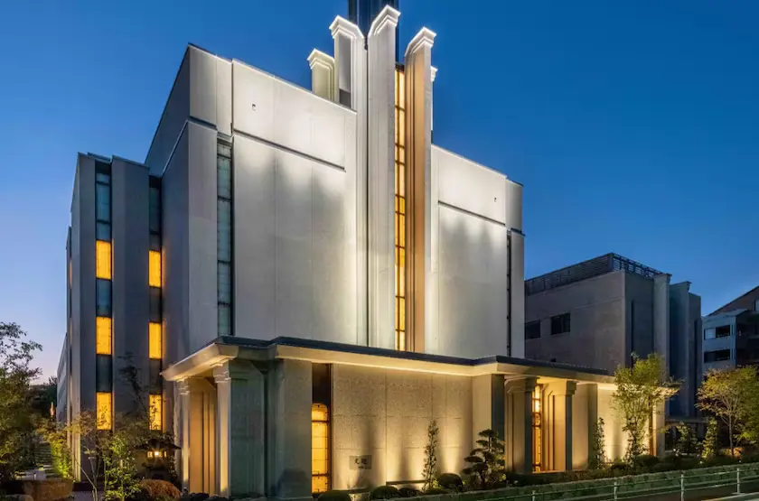
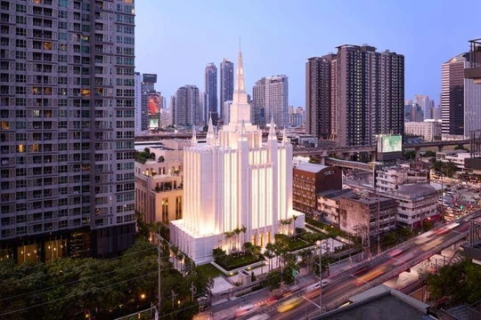
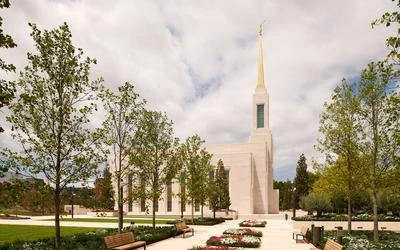

Temple Album
☰
Home
Old
New
Large
Small
Sacred Temples Around the World
Salt Lake Temple
Rome Italy Temple
Washington D.C. Temple
São Paulo Brazil Temple
London England Temple

Tokyo Japan Temple
Aba Nigeria Temple

Bangkok Thailand Temple

Lisbon Portugal Temple